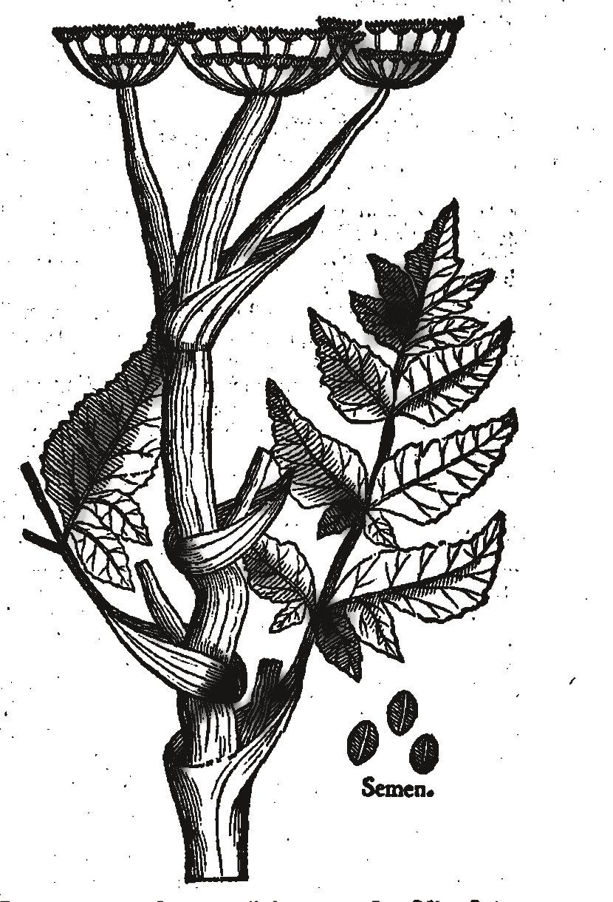

Atlas of
Historically
Lost Species
Primary sources, maps, and images for species documented in writing before their extinction.

Index
01—12Index figures are generated illustrations informed by historical depictions; they are not source images.